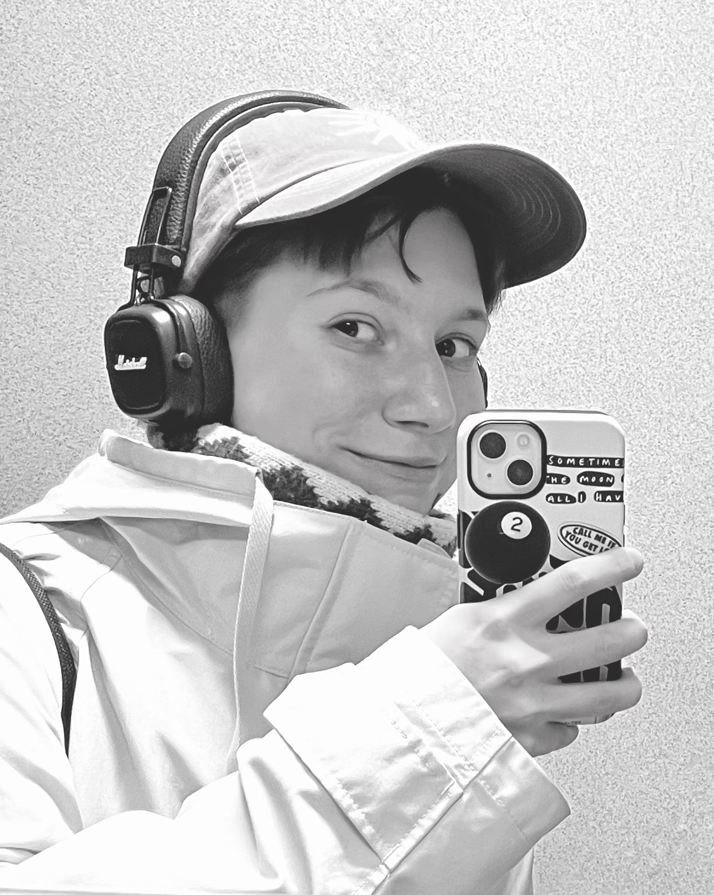

Hi, I'm Alex! When I'm not planning sprints, I'm drawing in Procreate, writing music in Logic Pro or building a fantasy world of my own. A lot of that ends up in the games I work on, usually as art or audio. I'm based in Uppsala and always up for a fika, so feel free to say hi!
— Alex P-V
Portfolio // 2022–2026
Aleksandra
Pavlova-Verevkina
Creative PM · Producer · GameDev
About Me
Projects
Projects
In Progress
Milestones
my toolbox
what I can do for you
Tags
← Back to projects
×
‹
›